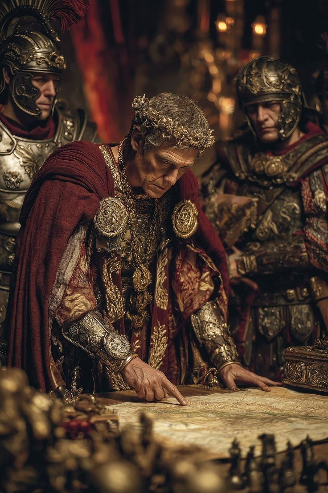
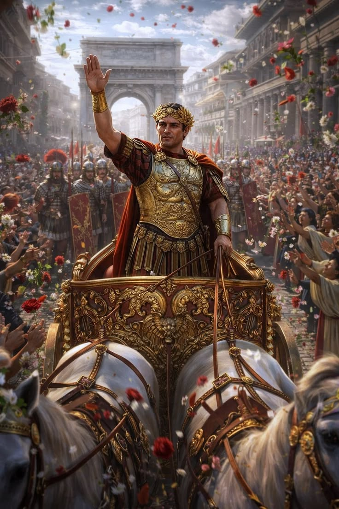
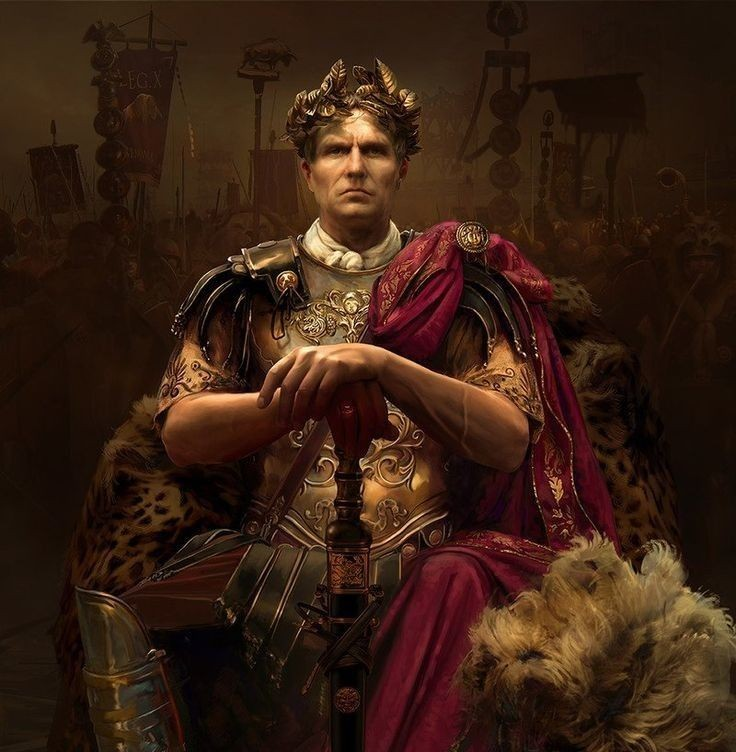
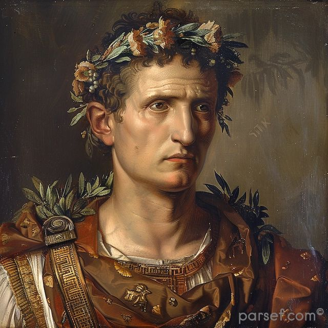
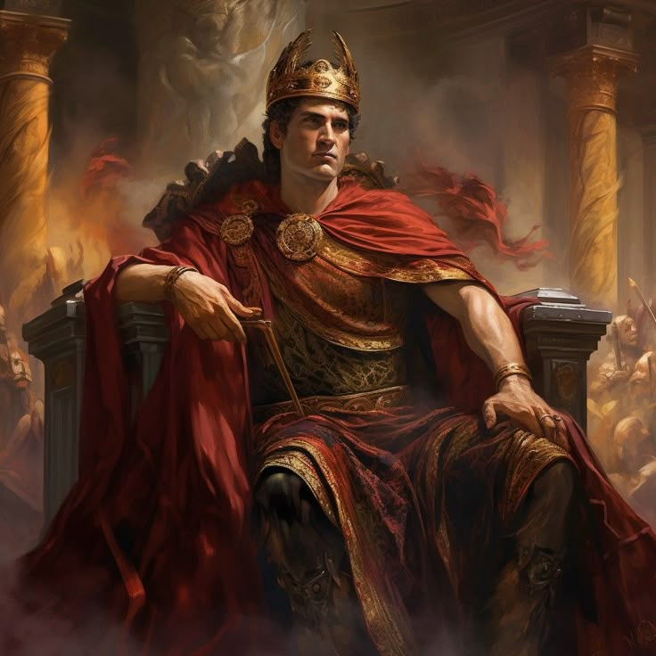

Efsanelerden gerçeklere, tarihin en büyük mirası.
Geldim, Gördüm, Yendim. - Jül Sezar


Antik Avrupa'nın koruyucusu.
Doğu'nun sarsılmaz kalesi.
Romalılar yolları o kadar düzgün yapmıştır ki, "Tüm yollar Roma'ya çıkar" sözü buradan gelir.


